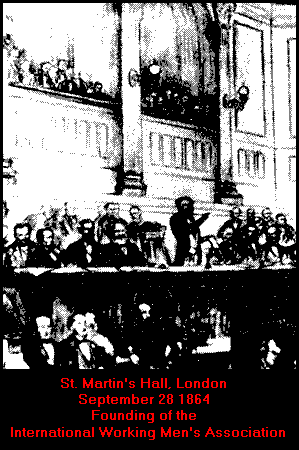

Marx-Engels Works
The International Workingmen's Association

(The First International)Documents and Writings
1864 - 1874History of the First International
Letter from Marx to Engels. 4 Nov 1864Images
Original notice of meeting
Membership form
Engels' membership card* * *
Minutes of
Central CountilOct 1864 to Aug 1866
Sep 1866 to Aug 1868* * *
Marx & Engels Writings
1864 The Inaugural Address of the International Oct 27 Document: General Rules and Administrative Regulations Oct 27 Letter from Marx to Engels, Marx joins the International Nov 04 Resolution On the Composition of the Provisional Central Council Nov 08 Letter From Marx to Abraham Lincoln, on his re-election Nov 19 Resolution On Terms of Admission of Organisations to the International Nov 22 Letter from Marx to the Editor of the Stuttgart Beobachter Nov 28 Resolution On the Composition of the Provisional Central Council Nov 29 Notes for A speech by Marx on France's "historical friendship" with Poland Dec 1865 Resolutions On the Composition of the Provisional Central Council Jan 24 "On Proudhon", Letter from Marx to J. B. Schweitzer Jan 24 Letter from Marx & Engels to the Editor of the Social-Democrat Feb 6 The Prussian Military Question and the German Workers' Party (E) Feb 12 Letter to the Editor of the Social-Democrat (ME) Feb 23 On The Prussian Military Question and the German Workers' Party (E) Feb 27 Resolutions: The Central Council on the Conflict in the Paris Section (M) Mar 7 The Prussian Military Question and the German Workers' Party (M) Mar 17 Statement Regarding the Causes of the Breach with the Social-Democrat (M) Mar 19 Letter from Marx to the Berliner Reform Mar 28 The "President of Mankind" (M) Apr 8 A Correction (M) Apr 13 Address: To US President Johnson (M) May 9 Value, Price and Profit, (M) Jun 27 Resolution On the Convocation of a General Congress in 1866 (M) Sep 19 Minutes Of London Conference of The International Sep 26 1866 Resolution On the Procedure of Discussing the Congress Programme (M) Jan 23 What Have the Working Classes to Do with Poland? (E) Mar 24 Document: A Warning (M) May 4 Resolution: On the Programme of the Geneva Congress (M) Jul 31 Instructions: For the Congress Delegates on the Different Questions. (M) Aug 30 Resolution: Gratitude to the Delegates to the Geneva Congress Sep 18 1867 Speech To the Polish Meeting in London. (M) Jan 22 Letter: A Correction for Zeitung fur Norddeutschland (M) Feb 18 Resolutions On the Agenda of the Lausanne Congress (M) Jul 23 Resolution: On the Attitude The League of Peace and Freedom (M) Aug 13 Resolution: The Fenian Prisoners at Manchester and the IWMA (M) Nov 20 1868 The Position of the International on Prussian Protectionist Tariffs May 12 Resolution on Changing the Place of the International's Congress in 1868 Jun 2 Resolution of the General Council on Félix Pyat's Provocative Behaviour Jul 7 Declaration on the British Government's Attitude Towards Tsarist Russia Jul 14 Draft Resolution on the Consequences of Using Machinery under Capitalism Proposed by the General Council to the Brussels Congress Aug 11 To the Executive Committee of the General Association of German Workers Aug 18 Draft Resolution on the Reduction of the Working Day for the Brussels Congress Aug 25 The Fourth Annual Report of the General Council (M) Sep 1 To the Directorate of the Schiller Institute Sep 16 On the Dissolution of the Lassallean Workers' Association (E) Oct 3 Connections Between the IWMA and English Working Men's Organisations Oct 4 How Gladstone's Bank Letter of 1866 Procured a Loan of Six Millions for Russia Nov 9 Preamble to Resolutions of the Geneva (1866) and Brussels (1868) Congresses Nov 3 Statement to the German Workers' Educational Society in London Nov 23 The IWMA and the International Alliance of Socialist Democracy(M) Dec 22 1869 Resume of General Council Meetings. IWMA to the Editor of The Bee-Hive Jan 6 Report on the Miners' Guilds in the Coalfields of Saxony Feb 21 General Council to Central Bureau of International Alliance of Socialist Democracy (M) Mar 9 The Belgian Massacres. To the Workmen of Europe and the United States Apr 4 Address: To the National Labour Union (US) (M) May 12 Resolution: The "Right of Inheritance" Jul 20 GC Report: On the Right of Inheritance (M) Aug 3 To the Fourth Annual Congress of the IWMA (M) Aug 3 Draft Resolution on Policy of British Government Towards the Irish Prisoners Nov 16 1870 The General Council to the Federal Council of Romance Switzerland (M) Jan 1 Obituary: Citizen Robert Shaw Jan 4 The English Government and the Fenian Prisoners Feb 21 Concerning the Conflict in the Lyons Section Mar 8 The General Council of the IWMA to Committee Members of the Russian Section in Geneva Mar 24 Confidential Communication (M) Mar 28 To the International Metalworkers' Society Apr 18 GC Declaration on the Persecution of the Members of the French Sections May 3 Draft GC Resolution: On the "French Federal Section in London" May 10 GC Resolution: On The Bee-Hive May 17 GC Resolution: On the Convocation of the Congress in Mainz May 17 To the Committee of the German Social-Democratic Workers' Party (ME) Jun 14 On the Federal Committee of Romance Switzerland Jun 29 The Lock-out of the Building Trades at Geneva Jul 5 Programme for the 5th Congress (M) Jul 14 Confidential Communication to All Sections Jul 14 Programme for the Mainz Congress of the International Jul 14 Marx’s First Address on the Franco-Prussian War Jul 23 Notes on the War Jul 29 To the Committee of the Social-Democratic Workers Aug 2 To the Committee of the Social-Democratic Workers' Party Aug 30 Marx’s Second Address on the Franco-Prussian War Sep 9 On Arrest of Central Committee members of Social-Democratic Workers' Party Sep 14 To the Sixth Congress of the Belgian Sections of the IWMA Dec 23 1871 On the Freedom of the Press and Meetings in Germany Jan 16 To the Spanish Federal Council of the IWMA Feb 13 The Aspect of Affairs in Russia Mar 15 Statement by the General Council to the Editor of The Times and Other Papers (M) Mar 22 Letter from Marx to the Editorial Boards of the Volksstaat and the Zukunft Mar 23 Letter from Marx to the Editor of De Werker Mar 31 Letter from Marx to the Editor of The Times Apr 3 On the Cigar-Workers' Strike in Antwerp Apr 5 Appeal to Weavers' & Spinners' Trade Unions of Manchester for Assistance to Spanish Textile Workers' Strike Apr 18 Resolution of the General Council Expelling Henri Louis Tolain from the IWMA Apr 25 Once Again "Herr Vogt" May 10 Third Address on the Franco-Prussian War (Commune) May 30 Letter from Marx to the Editor of The Pall Mall Gazette Jun 9 Statement by the General Council on Jules Favre's Circular Jun 12 Statement by the General Council to the Editor of The Standard Jun 20 Statement by the General Council on George Jacob Holyoake's Letter (E) Jun 21 Letter from the General Council to the Editor of The Spectator (resp. Examiner) Jun 21 Letter from Marx to the Editor of The Daily News Jun 27 Statement by the General Council on the Letters of G. J. Holyoake and B. Lucraft (E) Jun 27 Letter to Max Friedländer, the Editor of the Neue Freie Presse (M) Jun 30 The Address The Civil War in France and the English Press Jun 30 Letter from Marx to the Editor of The Pall Mall Gazette Jun 30 Mr. Washburne, the American Ambassador, in Paris Jul 11 Letter from Marx to the Editor of The Morning Advertiser Jul 11 Letter from Marx to the Editor of The Standard Jul 17 Mazzini's Statement against the IWMA Jul 28 Covering Letter by Marx to the Editor of The Times Aug 7 Letter from Engels to the Editor of The Times Aug 7 Letter from Marx to the Editor of L'International Aug 17 Letter from Marx to the Editor of Public Opinion Aug 19 Letter from Marx to the Editor of Public Opinion Aug 26 Letter from Marx to the Editor of the Gaulois Aug 24 Letter to the Editor of The Sun, Charles Dana Aug 25 The Commune and Archbishop Darboy Aug 29 Letter from Marx to the Editor of La Vérité Aug 29 Letter from Marx to the Editor of The Evening Standard Aug 30 Propositions to the General Council on Preparations for London Conference Sep 4 Propositions to Be Submitted to the Conference by the General Council Sep 5 The London Conference of the IWMA Sep 17 On the Activity of the Alliance of Socialist Democracy. Record of the Speech at the Sitting of the Conference Commission (M) 18 Sep Motions of the General Council Adopted by the Conference 18 Sep Speech: Political Action and the Working Class Sep 20 On the Political Action of the Working Class Sep 21 Resolution of the London Conference relating to the Split in Romance Switzerland Sep 26 Resolutions of IWMA Conference in London 17th-23rd September 1871 Sep 23 General Rules and Administrative Regulations of the IWMA, New edition Oct 24 Resolution of the General Council Expelling Gustave Durand from the IWMA (E) Oct 7 To Enrico Bignami, Editor of La Plebe (E) Oct 13 Declaration on Nechayev's Misuse of the Name of the IWMA Oct 14 Resolution of the General Council on the Rules of the French Section of 1871 Oct 17 On Progress of IWMA in Italy and Spain. Engels' Report at General Council of October 17, 1871 Oct 21 Letter from Engels to the Gazzettino Rosa: Covering Letter to the "Declaration of the General Council on Nechayev's Misuse of the Name of the IWMA" Oct 20 Statement by the General Council Concerning Alexander Baillie Cochrane's Letter Oct 31 On the Company Swindle in England Nov 4 Resolution of the General Council on the French Section of 1871 Nov 7 Garibaldi's Statement and Its Effects on the Working Classes in Italy. Engels' Record of His Report at the General Council Meeting of November 7, 1871 (E) Nov 7 Working Men's Congress at Rome. — Bebel's Speeches in the Reichstag Nov 14 Declaration by Marx Nov 17 Statement to the Editors of the Frankfurter Zeitung und Handelsbilatt Nov 24 Engels to the Federal Council of the Spanish Region in Madrid Nov 25 Letter from Engels to the Editors of II Proletario Italiano Nov 29 Credentials for Giuseppe Boriani (E) Nov 30 The Position of the Danish Members of the International on the Agrarian Question. Engels' Report at the General Council of December 5,1871 Dec 5 On the Position of the International's Sections in European Countries Dec 10 Declaration Sent by the General Council to the Editors of Italian Newspapers Concerning Mazzini's Articles about the International Dec 6 Letter from Marx to the Editor of The Eastern Post Dec 20 1872 Pamphlet: Fictitious Splits in the International (ME) Mar 5 US Federation Split Mar 5 Notes on the "American Split" May The Nationalization of the Land Jun 15 Resolution on Working Class Parties Sept Speech: The Political Battleground Sep 8 The Congress of Sonvillier and the International Jan 3 Letter to The Eastern Post (M) Jan 20 Letter to The Eastern Post (M) Jan 28 Letter to Gazzettino Rosa (E) Feb 7 To the Section of Commercial Employees in Barcelona Feb 16 Declaration of the General Council of the IWMA Feb 20 Fictitious Splits in the International. Private Circular from the General Council Mar 5 Resolutions on the Split in the United States' Federation Passed by the General Council, 5th & 12th March, 1872 Mar 12 Letter: To La Liberté Mar 12 Resolutions of the Meeting Held to Celebrate the Anniversary of the Paris Commune Mar 18 To the Spanish Federal Council Mar 27 The Nationalisation of the Land Jun 15 To Citizen Delegates of the Regional Spanish Congress Assembled at Saragossa Apr 3 To the Saragossa Congress Apr 6 Declaration of the General Council of the IWMA Concerning Cochrane's Speech in the House of Commons (M) Apr 16 Letter from Engels to the Society of Ferrarese Workers Apr 16 Letters from London. — I. The English Agricultural Labourers' Strike Apr 20 On the Police Persecution of the Member of the International Theodore Cuno Apr 23 To the Society of Ferrarese Workers May 10 Relations Between the Irish Sections and the British Federal Council May 14 Declaration of General Council Concerning the Universal Federalist Council May 20 Stefanoni and the International Again May 23 Marx’s Reply to Brentano's Article May 23 Letter from Engels to the Emancipation of the Proletarian Society in Turin Jun 14 The Housing Question, by Engels Jun 26 Announcement of the General Council on the Convocation and the Agenda of the Congress at The Hague Jun 29 Resolutions of the Sub-Committee on Mikhail Bakunin and the Alliance Jul 5 The International in America Jul 9 To Citizen Vincenzo Spotti, Secretary of the Committee for the Emancipation of the Working Classes in Parma (E) Jul 18 To the Striking Miners of the Ruhr Valley Jul 21 The General Council's Reply to the Protest of the Jura Federation Against the Convening of a Congress at The Hague Jul 28 Marx’s Reply to Brentano's Second Article Jul 28 Amendments to the General Rules and Administrative Regulations of the IWMA Adopted by the General Council in the Summer of 1872 August The General Council to All the Members of the IWMA Aug 6 Letter from Marx & Engels to the Spanish Sections of the IWMA Aug 8 Letter from Marx to the Editor of The Times Aug 16 The General Council to the New Madrid Federation (E) Aug 15 On the Rimini Conference Aug 24 Address of the General Council to the Italian Sections of the IWMA Concerning the Rimini Conference Aug 23 Resolution on the Behaviour of Members of the General Council at the Congress Aug 28 Report of the General Council to 5th Annual Congress, The Hague, 2-7 September 1872(M) August Report on Alliance of Socialist Democracy Presented in the Name of the General Council to the Congress at The Hague (E) August The Hague Congress (E) Sep 2 Motion for the Procedure of Debate on the General Rules and Administrative Regulations Sep 6 Proposal on the Transfer of the Seat and on the Composition of the General Council for 1872 Sep 6 Resolutions of the General Congress Held at The Hague (E) Sep 2-7 On the Hague Congress. A Correspondent's Report of a Speech Made at a Meeting in Amsterdam on September 8, 1872 Sep 15 To the Editor of Le Corsaire Sep 12 To the Editor of The Daily News Sep 17 On the Hague Congress of the International Sep 17 The Congress at The Hague (Letter to Enrico Bignami) Oct 1 Imperative Mandates at the Hague Congress Oct 4 Letters from London. — II. More about the Hague Oct 5 To the British Federal Council, IWMA Concerning Portuguese Strikes Oct 16 To the Editors of Der Volksstaat Oct 20 Report to the General Council of the I.W.M.A. upon the Situation in Spain, Portugal and Italy (E) Oct 31 To the Workers' and Peasants' Association of Lower Lombardy in Lodi Nov 13 Letters from London. — III. Meeting in Hyde Park Nov 14 Mandate to E. Larroque Dec 9 Letters from London. — IV. Meeting in Hyde Park. — Situation in Spain (E) Dec 11 Letter from Marx & Engels to the Editor of The International Dec 20 The Manchester Foreign Section to All Members of the British Federation Dec 20 Address of the British Federal Council to the Sections, Branches, Affiliated Societies and Members of the IWMA Dec 23 1873 Political Indifferentism (M) Jan Letter from Marx to the Editor of The Times Jan 2 The "Crisis" in Prussia (E) Jan 15 Reply to the Second Circular of the Self-styled Majority of the British Federal Council Jan 25 News on the Activities of the International on the Continent Jan 11 Notes for the General Council Feb 8 The Republic in Spain Mar 7 On Authority (E) March News on the International Labour Movement Mar 22 To the Ceneral Council of the IWMA Apr 15 On the Articles in the Neuer Social-Democrat (From a Letter to A. Hepner) May 07 The International and the Neuer May 02 Communication from the Continent May 22 To the General Council of the IWMA Jun 14 From the International Jun 20 Note on a Review of E. Renan's L'Antechrist Jul 18 Comment upon Giuseppe Garibaldi's Letter to Prospero Crescio Jul 13 The Alliance of Socialist Democracy and the IWMA. Report and Documents Published by Decision of the Hague Congress of the International August The Bakuninists at Work. An Account of the 1873 Spanish Revolt Oct 31 Varia on Germany Dec/Jan 74 1874 The English Elections Feb 22 The Imperial Military Law Mar 8
{kind=link}
{kind=link}
{kind=link}